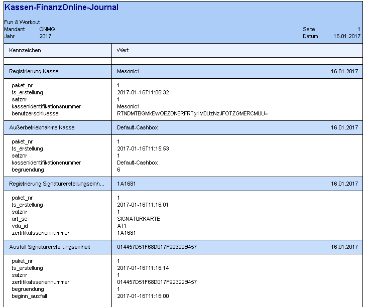
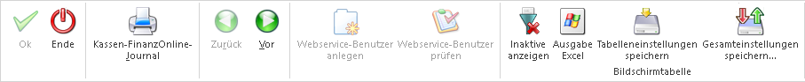

Die verschiedenen bereits durchgeführten Meldungen sind anschließend im Hauptfenster "Kassen-FinanzOnline-Meldung" ersichtlich und können zusätzlich mit dem Ribbon-Button "Kassen-FinanzOnline-Journal" als Bildschirmausgabe oder direkt am Drucker ausgegeben werden.

Buttons

Ø OK
Dieser Button steht im zweiten Schritt, sofern eine Meldung ausgewählt wurde, zur Verfügung und startet die Erstellung der XML-Datei.
Ø Ende
Durch bestätigen des "Ende" Buttons wird das Fenster geschlossen.
Ø Kassen-FinanzOnline-Journal
Wenn dieser Button geklickt wird, kann eine Übersicht aller bereits gemeldeten Kassen, Signaturen und Belegen auf den Bildschirm oder über den Drucker ausgegeben werden.
Ø Webservice-Benutzer anlegen
Wenn dieser Button gedrückt wird, öffnet sich das Fenster "Mandantenstamm" im Reiter "FinanzOnline". Hier kann wie im Punkt 1.3. beschrieben, ein Webservice Benutzer bei einem WinLine Benutzer hinterlegt werden, damit dieser Kassenmeldungen über Webservice direkt an das FinanzOnline-Portal durchführen kann.
Ø Webservice-Benutzer prüfen
Falls der gerade angemeldete Benutzer keinen Webservice Benutzer hinterlegt hatte, dieser aber im Zuge der Funktion "Webservice-Benutzer anlegen" angelegt wurde, kann mithilfe dieses Buttons eine neue Prüfung der Berechtigung erfolgen. Wenn dieser Benutzer anschließend eine Berechtigung aufweisen kann, wird die Option zur Webservice Übermittlung freigeschalten. Dieser Button ist nur freigeschalten, falls keine Webservice Benutzer bei dem jeweiligen WinLine Benutzer hinterlegt ist.
Ø Zurück
Wenn man bereits einmal den Button "Vor" gedrückt hat, kann man mit dem Button "Zurück" wieder zum vorherigen Schritt wechseln.
Ø Vor
Mithilfe dieses Buttons kann zum nächsten Schritt mit erweiterten Auswahlmöglichkeit gewechselt werden.
Ø Inaktive anzeigen
Wenn dieser Button aktiviert ist, werden auch inaktiv gesetzte Kassen lt. Kassen-Stammdaten angezeigt.
Ø Ausgabe Excel
Durch Anwahl des Buttons "Ausgabe Excel" wird der Inhalt der Tabelle nach Microsoft Excel übergeben.
Ø Tabelleneinstellungen speichern
Die Spalten einer Tabelle können grundsätzlich an beliebige Positionen verschoben, bzw. in der Breite entsprechend angepasst werden. Durch Anwahl des Buttons "Tabelleneinstellungen speichern" werden die Einstellungen benutzerspezifisch gespeichert und bei dem nächsten Aufruf des Programmpunktes wieder vorgeschlagen.
Ø Gesamteinstellungen speichern
Im Gegensatz zu "Tabelleneinstellungen speichern" können mit "Gesamteinstellungen speichern" mehrere Tabellenaufbauten gespeichert und nach Wunsch geladen werden. Zusätzlich werden Sonderfunktionen der Tabelle (z.B. "Spalte gruppieren") ebenfalls bei der Speicherung bedacht.